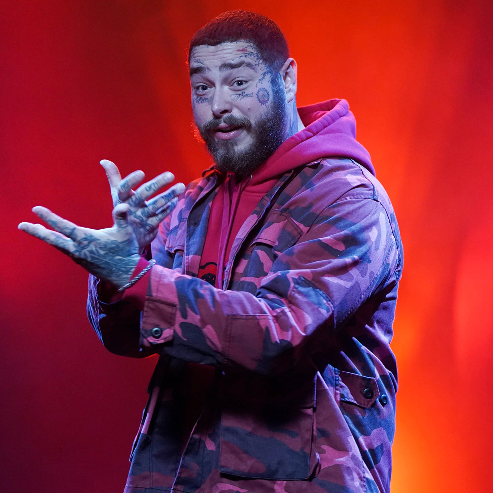
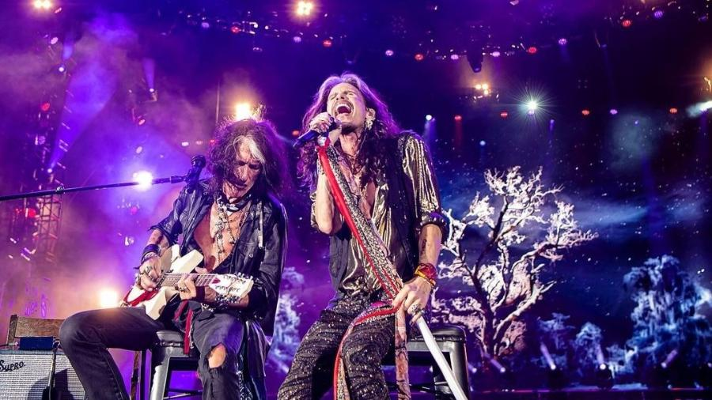

Novidades no Mundo da Música

Falecimento de Rita Lee
Uma das maiores cantoras e compositoras da história do Brasil, ela morreu nesta segunda (8). Rita foi diagnosticada com câncer de pulmão em 2021 e vinha fazendo tratamentos contra doença. A cantora conhecida como "rainha do rock brasileiro" nos deixou aos 75 anos. Ela foi diagnosticada com câncer de pulmão em 2021 e vinha fazendo tratamentos contra a doença. A família da cantora divulgou um comunicado nas redes sociais dela: "Comunicamos o falecimento de Rita Lee, em sua residência, em São Paulo, capital, no final da noite de ontem, cercada de todo o amor de sua família, como sempre desejou". O velório será aberto ao público, no Planetário do Parque Ibirapuera, na quarta-feira (10), das 10h às 17h.
Clique aqui para conferir os principais sucessos de Rita LeeTeremos Bruno Mars cantando no Brasil em 2023
O cantor Bruno Mars fará show no Brasil no ano de 2023, como atração do festival The Town, realizado em São Paulo. O evento, realizado pelos mesmos criadores do Rock in Rio, anunciou a atração nesta quinta-feira (2), como headliner do Palco Skyline. Cantor, compositor, produtor musical e multi-instrumentista norte-americano, nascido e criado no Estado do Havaí, Bruno Mars possui um histórico com a Rock World, que realiza o Rock in Rio e o The Town, já tendo se apresentado nas edições do Rock in Rio nos Estados Unidos, em 2015, e Lisboa, em 2018
Saiba mais Após um ano, Post Malone voltará ao Brasil para show nos palcos do The Town
O festival The Town aos poucos completa a lista das cinco principais atrações internacionais que se apresentarão em sua primeira edição, em setembro deste ano, em São Paulo, no Autódromo de Interlagos. O rapper Post Malone encerrará a noite de abertura no palco principal do evento, em 2 de setembro. Os organizadores, que também são os responsáveis pelo Rock in Rio, vão trazer o artista de volta ao Brasil cerca de um ano após uma apresentação no festival carioca. Além de Post Malone, as bandas Foo Fighters e Maroon 5 também já foram anunciadas para o The Town, que acontece nos dias 2, 3, 7, 9 e 10 de setembro. Com hits como Rockstar”, “Congratulations”, “Sunflower” e “Circles”, embaixo de chuva ininterrupta, Malone fez um dos shows mais repercutidos e elogiados do último Rock in Rio.
Saiba mais Aerosmith anuncia última turnê da banda. "Será uma turnê de despedida dos palcos"
O Aerosmith anunciou, nesta segunda-feira (1º), uma turnê que marcará a despedida dos palcos após mais de 50 anos de carreira do grupo de Steven Tyler e Joe Perry. O Brasil, ao menos por enquanto, não receberá os últimos shows. O anúncio desta segunda inclui 40 shows divididos apenas entre os Estados Unidos e Canadá. A Live Nation, produtora da turnê, não esclareceu se serão incluídas mais datas e outros países posteriormente.
Saiba Mais
Foo Fighters lança sua primeira música desde a morte de Taylor Hawkins. Além disso, foi anunciado seu novo álbum: "But Here We Are"
Poucos meses antes de vir ao Brasil para show no The Town, o Foo Fighters lançou, nesta quarta-feira (19), sua primeira música desde a morte do baterista Taylor Hawkins, em março do ano passado, durante turnê pela América Latina. Junto da divulgação do single “Rescued”, a banda liderada por Dave Grohl anunciou o lançamento de seu 11º álbum de estúdio. “But Here We Are” chegará às plataformas de streaming com dez músicas inéditas no dia 2 de junho.Um comunicado divulgado à imprensa classificou o novo disco como “uma resposta brutalmente honesta e emocionalmente crua a tudo que o Foo Fighters suportou no ano passado” e “uma prova dos poderes de cura da música, amizade e família”.
Saiba mais